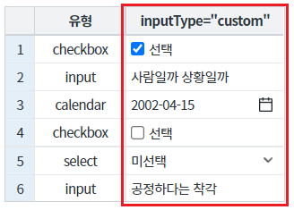
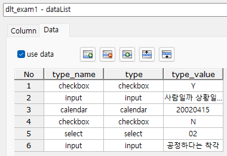
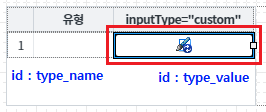
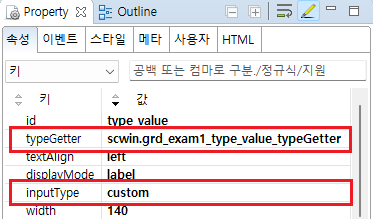
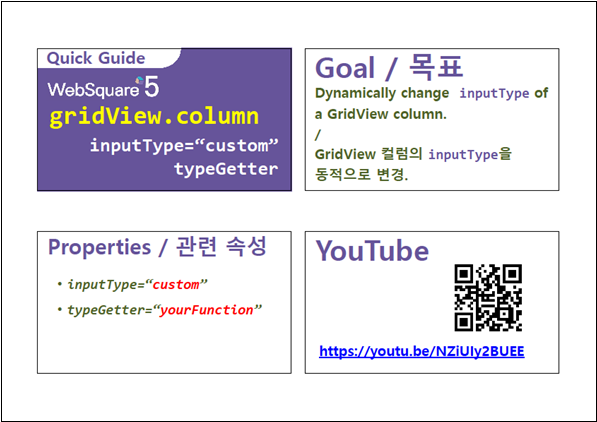

GridView의 컬럼의 inputType을 조건에 따라 설정하는 예제입니다.
조건에 따라 셀의 inputType 설정하기
[브라우저(Chrome) 실행 예시]

컬럼 [유형]의 값에 따라 inputType이 아래와 같이 지정되었습니다.
- checkbox : inputType="checkbox"
- input : inputType="input"
- calendar : inputType="calendar"
- checkbox : inputType="checkbox"
- select : inputType="select"
- input : inputType="input"
동적으로 inputType을 지정하기 위해 참조할 컬럼을 포함하여 생성합니다.
컬럼 ID | 용도 |
|---|---|
type_name | GridView에 출력용 데이터. 헤더 컬럼명 : 유형. |
type | 동적으로 inputType을 생성하기 위한 참조 데이터. |
type_value | 동적으로 inputType이 생성되는 컬럼의 value로 할당됩니다. GridView의 헤더 컬럼 [inputType="custom"]에 출력됩니다. |
그림 1.데이터 예시

GridView와 연결 방법은 생략되었습니다.
동적으로 inputType을 지정할 컬럼의 속성을 아래와 같이 정의합니다.
예제 파일에서는 바디 컬럼의 ID "type_value"에 정의하였습니다.
[필수] inputType="custom" //동적으로 inputType을 설정.
[필수] typeGetter="scwin.grd_exam1_type_value_typeGetter" //inputType의 정보를 반환할 함수명
그림 2.웹스퀘어5 SP5 스튜디오의 Design 탭 예시 - 컬럼 선택

그림 3.웹스퀘어5 SP5 스튜디오의 Property View(속성창) 예시

[소스 코드 예시]
<!-- gridView 의 소스 본문 예시 --> <w2:gridView dataList="data:dlt_exam1"> <!-- 중략 --> <w2:gBody id="gBody1" style=""> <w2:row id="row2" style=""> <!-- 중략 --> <w2:column inputType="custom" typeGetter="scwin.grd_exam1_type_value_typeGetter" id="type_value"> </w2:column> <!-- 중략 --> </w2:row> </w2:gBody> </w2:gridView>
컬럼의 속성 "typeGetter"에 정의한 함수 "scwin.grd_exam1_type_value_typeGetter"를 정의합니다.
[소스 코드 예시]
/** * grd_exam1의 컬럼 [inputType="custom"]의 inputType 반환 * 속성 [typeGetter]에 함수명이 정의되어있습니다. */ scwin.grd_exam1_type_value_typeGetter = function(argInfo) { var rowIndex = argInfo.rowIndex; var colIndex = argInfo.colIndex; var jsnRow; var returnInfo; //inputType 정보가 담긴 JSON객체 var inputType; var strID; jsnRow = dlt_exam1.getRowJSON(rowIndex); //현 행의 JSON 데이터 반환받기 inputType = jsnRow.type || "notype"; //중복되지 않는 ID 생성 strID = "dynamic_" + inputType + "_" + rowIndex + "_" + colIndex; switch (inputType) { case "checkbox" : returnInfo = { id : strID, inputType : "checkbox", options : {valueType: "other", trueValue: "Y", falseValue: "N", checkboxLabel: "선택" } }; break; case "calendar" : returnInfo = { id : strID, inputType : "calendar", options : {viewType: "icon", dataType: "date", displayFormat: "yyyy-MM-dd"} }; break; case "select" : //itemSet 속성은 select에 출력할 콤보 리스트에 연결할 DataList의 정보입니다. returnInfo = { id : strID, inputType : "select", options : {viewType: "icon"}, itemSet : { nodeset: "data:dlt_code", label: "label", value: "code" } }; break; case "input" : default: returnInfo = { id : strID, inputType : "text", options : {} }; break; } return returnInfo; };
[body column] inputType
[body column] typeGetter
[웹스퀘어5 SP5 개발 가이드] GridView
링크 : https://docs1.inswave.com/sp5_user_guide/86bdcf48029b958b
[웹스퀘어5 SP5 개발 가이드] GridView의 inpuType 종류
링크 : https://docs1.inswave.com/sp5_user_guide/86bdcf48029b958b#e234842b00bfc33a
[웹스퀘어5 SP5 개발 가이드] GridView의 inputType 동적 변경 (typeGetter)
링크 : https://docs1.inswave.com/sp5_user_guide/86bdcf48029b958b#0538e35a633b7592
GridView의 inputType 동적 변경 (typeGetter)
링크 : https://youtu.be/NZiUIy2BUEE
